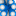

<!doctype html>
<html lang="en">
    <head>
        <meta charset="utf-8">
        <meta http-equiv="X-UA-Compatible" content="IE=edge">
        <meta name="viewport" content="initial-scale=1,user-scalable=no,maximum-scale=1,width=device-width">
        <meta name="mobile-web-app-capable" content="yes">
        <meta name="apple-mobile-web-app-capable" content="yes">
        <link rel="stylesheet" href="css/leaflet.css"><link rel="stylesheet" href="css/L.Control.Locate.min.css">
        <link rel="stylesheet" href="css/qgis2web.css"><link rel="stylesheet" href="css/fontawesome-all.min.css">
        <link rel="stylesheet" href="css/leaflet-control-geocoder.Geocoder.css">
        <link rel="stylesheet" href="css/leaflet-measure.css">
        <style>
        html, body, #map {
            width: 100%;
            height: 100%;
            padding: 0;
            margin: 0;
        }
        </style>
        <title></title>
    </head>
    <body>
        <div id="map">
        </div>
        <script src="js/qgis2web_expressions.js"></script>
        <script src="js/leaflet.js"></script><script src="js/L.Control.Locate.min.js"></script>
        <script src="js/multi-style-layer.js"></script>
        <script src="js/leaflet.rotatedMarker.js"></script>
        <script src="js/leaflet.pattern.js"></script>
        <script src="js/leaflet-hash.js"></script>
        <script src="js/Autolinker.min.js"></script>
        <script src="js/rbush.min.js"></script>
        <script src="js/labelgun.min.js"></script>
        <script src="js/labels.js"></script>
        <script src="js/leaflet-control-geocoder.Geocoder.js"></script>
        <script src="js/leaflet-measure.js"></script>
        <script src="data/AREA_2.js"></script>
        <script src="data/GPS_SurveyPoint_3.js"></script>
        <script src="data/ROAD_4.js"></script>
        <script src="data/Boundary_Name_5.js"></script>
        <script>
        var highlightLayer;
        function highlightFeature(e) {
            highlightLayer = e.target;

            if (e.target.feature.geometry.type === 'LineString') {
              highlightLayer.setStyle({
                color: '#ffff00',
              });
            } else {
              highlightLayer.setStyle({
                fillColor: '#ffff00',
                fillOpacity: 1
              });
            }
            highlightLayer.openPopup();
        }
        var map = L.map('map', {
            zoomControl:true, maxZoom:28, minZoom:10
        })
        var hash = new L.Hash(map);
        map.attributionControl.setPrefix('<a href="https://github.com/tomchadwin/qgis2web" target="_blank">qgis2web</a> &middot; <a href="https://leafletjs.com" title="A JS library for interactive maps">Leaflet</a> &middot; <a href="https://qgis.org">QGIS</a>');
        var autolinker = new Autolinker({truncate: {length: 30, location: 'smart'}});
        L.control.locate({locateOptions: {maxZoom: 19}}).addTo(map);
        var measureControl = new L.Control.Measure({
            position: 'topleft',
            primaryLengthUnit: 'meters',
            secondaryLengthUnit: 'kilometers',
            primaryAreaUnit: 'sqmeters',
            secondaryAreaUnit: 'hectares'
        });
        measureControl.addTo(map);
        document.getElementsByClassName('leaflet-control-measure-toggle')[0]
        .innerHTML = '';
        document.getElementsByClassName('leaflet-control-measure-toggle')[0]
        .className += ' fas fa-ruler';
        var bounds_group = new L.featureGroup([]);
        function setBounds() {
            if (bounds_group.getLayers().length) {
                map.fitBounds(bounds_group.getBounds());
            }
        }
        map.createPane('pane_GoogleSatellite_0');
        map.getPane('pane_GoogleSatellite_0').style.zIndex = 400;
        var layer_GoogleSatellite_0 = L.tileLayer('https://mt1.google.com/vt/lyrs=s&x={x}&y={y}&z={z}', {
            pane: 'pane_GoogleSatellite_0',
            opacity: 1.0,
            attribution: '<a href="https://www.google.at/permissions/geoguidelines/attr-guide.html">Map data ©2015 Google</a>',
            minZoom: 10,
            maxZoom: 28,
            minNativeZoom: 0,
            maxNativeZoom: 20
        });
        layer_GoogleSatellite_0;
        map.addLayer(layer_GoogleSatellite_0);
        map.createPane('pane_ESRITopo_1');
        map.getPane('pane_ESRITopo_1').style.zIndex = 401;
        var layer_ESRITopo_1 = L.tileLayer('http://services.arcgisonline.com/ArcGIS/rest/services/World_Topo_Map/MapServer/tile/{z}/{y}/{x}', {
            pane: 'pane_ESRITopo_1',
            opacity: 1.0,
            attribution: '',
            minZoom: 10,
            maxZoom: 28,
            minNativeZoom: 0,
            maxNativeZoom: 20
        });
        layer_ESRITopo_1;
        map.addLayer(layer_ESRITopo_1);
        function pop_AREA_2(feature, layer) {
            layer.on({
                mouseout: function(e) {
                    for (i in e.target._eventParents) {
                        e.target._eventParents[i].resetStyle(e.target);
                    }
                    if (typeof layer.closePopup == 'function') {
                        layer.closePopup();
                    } else {
                        layer.eachLayer(function(feature){
                            feature.closePopup()
                        });
                    }
                },
                mouseover: highlightFeature,
            });
            var popupContent = '<table>\
                    <tr>\
                        <th scope="row">Total_Area</th>\
                        <td>' + (feature.properties['Total_Area'] !== null ? autolinker.link(feature.properties['Total_Area'].toLocaleString()) : '') + '</td>\
                    </tr>\
                </table>';
            layer.bindPopup(popupContent, {maxHeight: 400});
        }

        function style_AREA_2_0() {
            return {
                pane: 'pane_AREA_2',
                interactive: true,
            }
        }
        map.createPane('pane_AREA_2');
        map.getPane('pane_AREA_2').style.zIndex = 402;
        map.getPane('pane_AREA_2').style['mix-blend-mode'] = 'normal';
        var layer_AREA_2 = new L.geoJson(json_AREA_2, {
            attribution: '',
            interactive: true,
            dataVar: 'json_AREA_2',
            layerName: 'layer_AREA_2',
            pane: 'pane_AREA_2',
            onEachFeature: pop_AREA_2,
            style: style_AREA_2_0,
        });
        bounds_group.addLayer(layer_AREA_2);
        map.addLayer(layer_AREA_2);
        function pop_GPS_SurveyPoint_3(feature, layer) {
            layer.on({
                mouseout: function(e) {
                    for (i in e.target._eventParents) {
                        e.target._eventParents[i].resetStyle(e.target);
                    }
                    if (typeof layer.closePopup == 'function') {
                        layer.closePopup();
                    } else {
                        layer.eachLayer(function(feature){
                            feature.closePopup()
                        });
                    }
                },
                mouseover: highlightFeature,
            });
            var popupContent = '<table>\
                    <tr>\
                        <th scope="row">Survey</th>\
                        <td>' + (feature.properties['Survey'] !== null ? autolinker.link(feature.properties['Survey'].toLocaleString()) : '') + '</td>\
                    </tr>\
                </table>';
            layer.bindPopup(popupContent, {maxHeight: 400});
        }

        function style_GPS_SurveyPoint_3_0() {
            return {
                pane: 'pane_GPS_SurveyPoint_3',
                radius: 6.4,
                opacity: 1,
                color: 'rgba(233,4,4,1.0)',
                dashArray: '',
                lineCap: 'butt',
                lineJoin: 'miter',
                weight: 5.0,
                fill: true,
                fillOpacity: 1,
                fillColor: 'rgba(255,255,255,1.0)',
                interactive: true,
            }
        }
        function style_GPS_SurveyPoint_3_1() {
            return {
                pane: 'pane_GPS_SurveyPoint_3',
                radius: 1.4,
                opacity: 1,
                color: 'rgba(0,0,0,1.0)',
                dashArray: '',
                lineCap: 'butt',
                lineJoin: 'miter',
                weight: 2.0,
                fill: true,
                fillOpacity: 1,
                fillColor: 'rgba(0,0,0,1.0)',
                interactive: true,
            }
        }
        map.createPane('pane_GPS_SurveyPoint_3');
        map.getPane('pane_GPS_SurveyPoint_3').style.zIndex = 403;
        map.getPane('pane_GPS_SurveyPoint_3').style['mix-blend-mode'] = 'normal';
        var layer_GPS_SurveyPoint_3 = new L.geoJson.multiStyle(json_GPS_SurveyPoint_3, {
            attribution: '',
            interactive: true,
            dataVar: 'json_GPS_SurveyPoint_3',
            layerName: 'layer_GPS_SurveyPoint_3',
            pane: 'pane_GPS_SurveyPoint_3',
            onEachFeature: pop_GPS_SurveyPoint_3,
            pointToLayers: [function (feature, latlng) {
                var context = {
                    feature: feature,
                    variables: {}
                };
                return L.circleMarker(latlng, style_GPS_SurveyPoint_3_0(feature));
            },function (feature, latlng) {
                var context = {
                    feature: feature,
                    variables: {}
                };
                return L.circleMarker(latlng, style_GPS_SurveyPoint_3_1(feature));
            },
        ]});
        bounds_group.addLayer(layer_GPS_SurveyPoint_3);
        map.addLayer(layer_GPS_SurveyPoint_3);
        function pop_ROAD_4(feature, layer) {
            layer.on({
                mouseout: function(e) {
                    for (i in e.target._eventParents) {
                        e.target._eventParents[i].resetStyle(e.target);
                    }
                    if (typeof layer.closePopup == 'function') {
                        layer.closePopup();
                    } else {
                        layer.eachLayer(function(feature){
                            feature.closePopup()
                        });
                    }
                },
                mouseover: highlightFeature,
            });
            var popupContent = '<table>\
                    <tr>\
                        <th scope="row">Name</th>\
                        <td>' + (feature.properties['Name'] !== null ? autolinker.link(feature.properties['Name'].toLocaleString()) : '') + '</td>\
                    </tr>\
                </table>';
            layer.bindPopup(popupContent, {maxHeight: 400});
        }

        function style_ROAD_4_0() {
            return {
                pane: 'pane_ROAD_4',
                opacity: 1,
                color: 'rgba(0,0,0,1.0)',
                dashArray: '',
                lineCap: 'round',
                lineJoin: 'round',
                weight: 4.0,
                fillOpacity: 0,
                interactive: true,
            }
        }
        function style_ROAD_4_1() {
            return {
                pane: 'pane_ROAD_4',
                opacity: 1,
                color: 'rgba(255,255,255,1.0)',
                dashArray: '',
                lineCap: 'round',
                lineJoin: 'round',
                weight: 3.0,
                fillOpacity: 0,
                interactive: true,
            }
        }
        map.createPane('pane_ROAD_4');
        map.getPane('pane_ROAD_4').style.zIndex = 404;
        map.getPane('pane_ROAD_4').style['mix-blend-mode'] = 'normal';
        var layer_ROAD_4 = new L.geoJson.multiStyle(json_ROAD_4, {
            attribution: '',
            interactive: true,
            dataVar: 'json_ROAD_4',
            layerName: 'layer_ROAD_4',
            pane: 'pane_ROAD_4',
            onEachFeature: pop_ROAD_4,
            styles: [style_ROAD_4_0,style_ROAD_4_1,]
        });
        bounds_group.addLayer(layer_ROAD_4);
        map.addLayer(layer_ROAD_4);
        function pop_Boundary_Name_5(feature, layer) {
            layer.on({
                mouseout: function(e) {
                    for (i in e.target._eventParents) {
                        e.target._eventParents[i].resetStyle(e.target);
                    }
                    if (typeof layer.closePopup == 'function') {
                        layer.closePopup();
                    } else {
                        layer.eachLayer(function(feature){
                            feature.closePopup()
                        });
                    }
                },
                mouseover: highlightFeature,
            });
            var popupContent = '<table>\
                    <tr>\
                        <th scope="row">BP</th>\
                        <td>' + (feature.properties['BP'] !== null ? autolinker.link(feature.properties['BP'].toLocaleString()) : '') + '</td>\
                    </tr>\
                </table>';
            layer.bindPopup(popupContent, {maxHeight: 400});
        }

        function style_Boundary_Name_5_0() {
            return {
                pane: 'pane_Boundary_Name_5',
                radius: 8.0,
                opacity: 1,
                color: 'rgba(0,0,0,1.0)',
                dashArray: '',
                lineCap: 'butt',
                lineJoin: 'miter',
                weight: 2.0,
                fill: true,
                fillOpacity: 1,
                fillColor: 'rgba(255,255,255,1.0)',
                interactive: true,
            }
        }
        map.createPane('pane_Boundary_Name_5');
        map.getPane('pane_Boundary_Name_5').style.zIndex = 405;
        map.getPane('pane_Boundary_Name_5').style['mix-blend-mode'] = 'normal';
        var layer_Boundary_Name_5 = new L.geoJson(json_Boundary_Name_5, {
            attribution: '',
            interactive: true,
            dataVar: 'json_Boundary_Name_5',
            layerName: 'layer_Boundary_Name_5',
            pane: 'pane_Boundary_Name_5',
            onEachFeature: pop_Boundary_Name_5,
            pointToLayer: function (feature, latlng) {
                var context = {
                    feature: feature,
                    variables: {}
                };
                return L.circleMarker(latlng, style_Boundary_Name_5_0(feature));
            },
        });
        bounds_group.addLayer(layer_Boundary_Name_5);
        map.addLayer(layer_Boundary_Name_5);
        var osmGeocoder = new L.Control.Geocoder({
            collapsed: true,
            position: 'topleft',
            text: 'Search',
            title: 'Testing'
        }).addTo(map);
        document.getElementsByClassName('leaflet-control-geocoder-icon')[0]
        .className += ' fa fa-search';
        document.getElementsByClassName('leaflet-control-geocoder-icon')[0]
        .title += 'Search for a place';
        var baseMaps = {};
        L.control.layers(baseMaps,{' Boundary_Name': layer_Boundary_Name_5,' ROAD': layer_ROAD_4,' GPS_Survey Point': layer_GPS_SurveyPoint_3,' AREA': layer_AREA_2,"ESRI Topo": layer_ESRITopo_1,"Google Satellite": layer_GoogleSatellite_0,},{collapsed:false}).addTo(map);
        setBounds();
        var i = 0;
        layer_AREA_2.eachLayer(function(layer) {
            var context = {
                feature: layer.feature,
                variables: {}
            };
            layer.bindTooltip((layer.feature.properties['Total_Area'] !== null?String('<div style="color: #1d00ff; font-size: 20pt; font-weight: bold; font-family: \'Times New Roman\', sans-serif;">' + layer.feature.properties['Total_Area']) + '</div>':''), {permanent: true, offset: [-0, -16], className: 'css_AREA_2'});
            labels.push(layer);
            totalMarkers += 1;
              layer.added = true;
              addLabel(layer, i);
              i++;
        });
        var i = 0;
        layer_ROAD_4.eachLayer(function(layer) {
            var context = {
                feature: layer.feature,
                variables: {}
            };
            layer.bindTooltip((layer.feature.properties['Name'] !== null?String('<div style="color: #000000; font-size: 15pt; font-weight: bold; font-family: \'Times New Roman\', sans-serif;">' + layer.feature.properties['Name']) + '</div>':''), {permanent: true, offset: [-0, -16], className: 'css_ROAD_4'});
            labels.push(layer);
            totalMarkers += 1;
              layer.added = true;
              addLabel(layer, i);
              i++;
        });
        var i = 0;
        layer_Boundary_Name_5.eachLayer(function(layer) {
            var context = {
                feature: layer.feature,
                variables: {}
            };
            layer.bindTooltip((layer.feature.properties['BP'] !== null?String('<div style="color: #e90404; font-size: 15pt; font-weight: bold; font-family: \'Times New Roman\', sans-serif;">' + layer.feature.properties['BP']) + '</div>':''), {permanent: true, offset: [-0, -16], className: 'css_Boundary_Name_5'});
            labels.push(layer);
            totalMarkers += 1;
              layer.added = true;
              addLabel(layer, i);
              i++;
        });
        resetLabels([layer_AREA_2,layer_ROAD_4,layer_Boundary_Name_5]);
        map.on("zoomend", function(){
            resetLabels([layer_AREA_2,layer_ROAD_4,layer_Boundary_Name_5]);
        });
        map.on("layeradd", function(){
            resetLabels([layer_AREA_2,layer_ROAD_4,layer_Boundary_Name_5]);
        });
        map.on("layerremove", function(){
            resetLabels([layer_AREA_2,layer_ROAD_4,layer_Boundary_Name_5]);
        });
        </script>
    </body>
</html>
